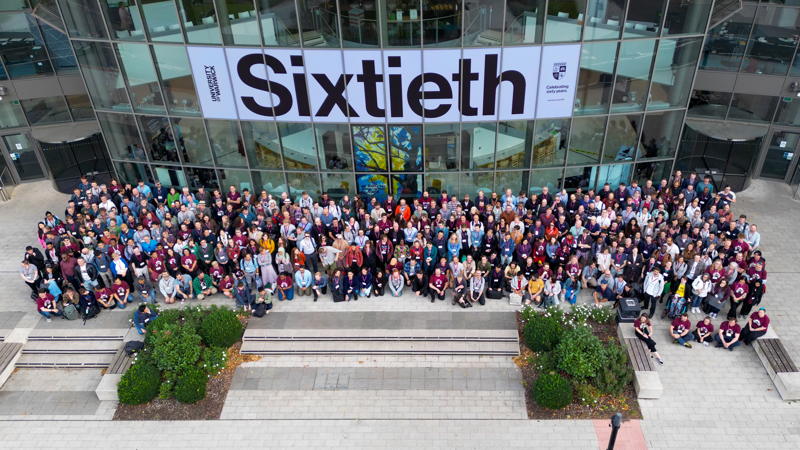
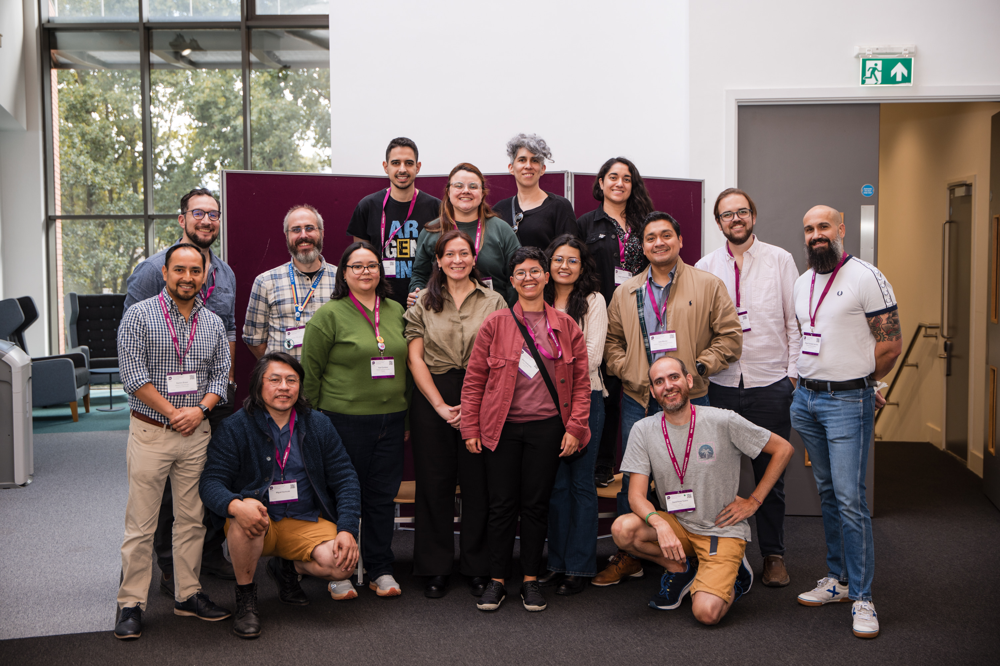
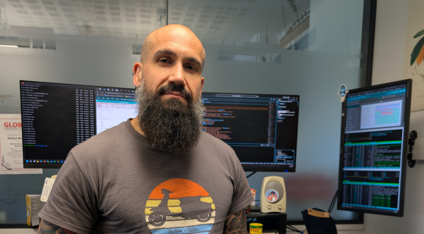
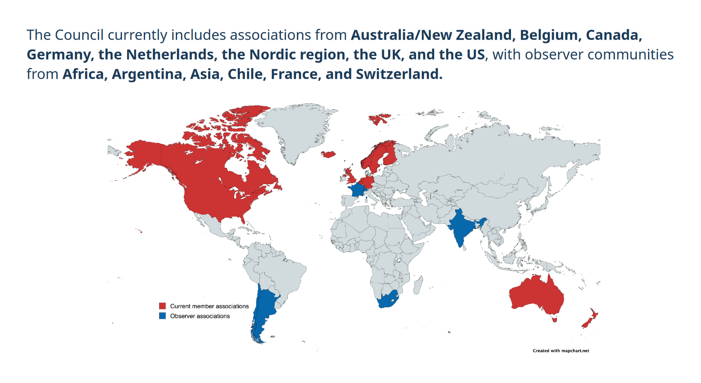

Need
There's talent in research and software, including a base of Spanish RSEs working abroad, but there still isn't a national network to connect it.
We've won two football World Cups, we're the world's second most visited tourist destination, and we lead the way in high-speed rail and solar energy. So what about RSE in Spain? There's already a Spanish-speaking community sharing knowledge through the charlas RSE en español (RSE talks in Spanish). What's still missing is a clear, organised movement in Spain.
The RSE talks in Spanish are organised by Carlos Gavidia-Calderón (Alan Turing Institute).


There's talent in research and software, including a base of Spanish RSEs working abroad, but there still isn't a national network to connect it.
Other countries already have well-established RSE communities. Spain can build its own.
To promote RSE in our country: an RSE Spain with a local base, a Spanish-speaking community, and a genuine presence in research.
This initiative was seeded at RSECon25 and has been launched this year during RSECon26.

I'm Miguel, originally from La Alcarria (Spain) and now based in Norwich, UK, where I've been a Research Software Engineer at the John Innes Centre since 2024. My work is about bridging biology and software: helping research rely on tools that are reliable, reproducible and sustainable. I'm also actively involved in the UK's RSE community, where among other things I've organised a regional meet-up in Norwich bringing together RSEs from East Anglia.
Being based outside Spain, what I'm looking for is people within the country willing to kick-start the movement and help build it. I can act as a link with the international RSE community in future if needed, but this has to be born and grow from within.
You can also email rseespana@gmail.com, join our Slack, find us in the #rse-es channel on the Society of Research Software Engineering's Slack (request access here), or contribute on GitHub.
A Research Software Engineer (RSE) is someone who works at the intersection of research and technology: designing, developing and maintaining the software, data and infrastructure that make research possible, applying engineering practices to scientific and technological problems.
It's a hybrid role, straddling research and engineering, and one that's still not widely recognised in Spain.
But RSE isn't just a job title, nor does it belong exclusively to academia. It's an umbrella term covering people with very different profiles who work with software, data and technology in research, whether in universities and research centres, hospitals, public bodies, or industry.
It might be a researcher developing their own models and tools, a scientific software developer, a data or bioinformatics specialist, a systems or HPC engineer, someone developing hardware and instrumentation, or a professional at a company building technology for research and R&D.
What they have in common isn't their job title or where they work, but their role in making research possible through software and technology.
In the UK, for example, there's the Society of Research Software Engineering, which has spent ten years running its annual conference and working towards recognition of this professional community, as well as supporting regional groups and mentoring programmes.
Globally, the Research Software Alliance coordinates the International Council of RSE Associations, which brings together national RSE associations from around the world. Spain, for now, doesn't appear on the map.

Source: Barker, M., & Hartley, K. (2026). RSE Worldwide session - Research Software Alliance [Presentation]. RSECon26. Zenodo. https://doi.org/10.5281/zenodo.22299159 (CC-BY-4.0).